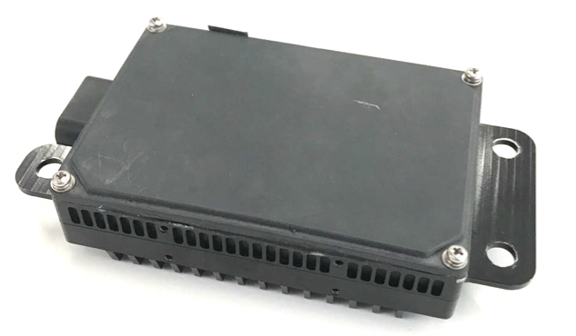

Installation Guide of Racobit B01HC Radar¶
Racobit developed one Radar product with 60 degree FOV and 150 m detection range for autonomous driving needs.

Installation¶
A mechanical mount needs to be designed to mount the Radar to the desired position. The mount should be able to hold the Radar in a way that the scanning plane is parallel to the bottom of the car, so that the scanning radar wave would not be blocked by the road surface causing it to create ghost objects. If a stationary mount cannot satisfy such requirement, please consider adding adjustment in vertical and horizontal directions to the mount
When you receive the Radar package, a set of connection cables should be included. Connect the water-proof connector to the Radar, and guide the cable through/under the car into the trunk. Secure the cable to the body of the car if necessary
Connect the power cable to 12VDC power supply.
Connect the CAN output to the CAN interface of the IPC.
You should be able to receive the CAN messages through the CAN port once the Radar is powered.
Please discuss with the vendor for additional support if needed while integrating it with your vehicle.
Disclaimer¶
This device is Apollo Hardware Development Platform Supported